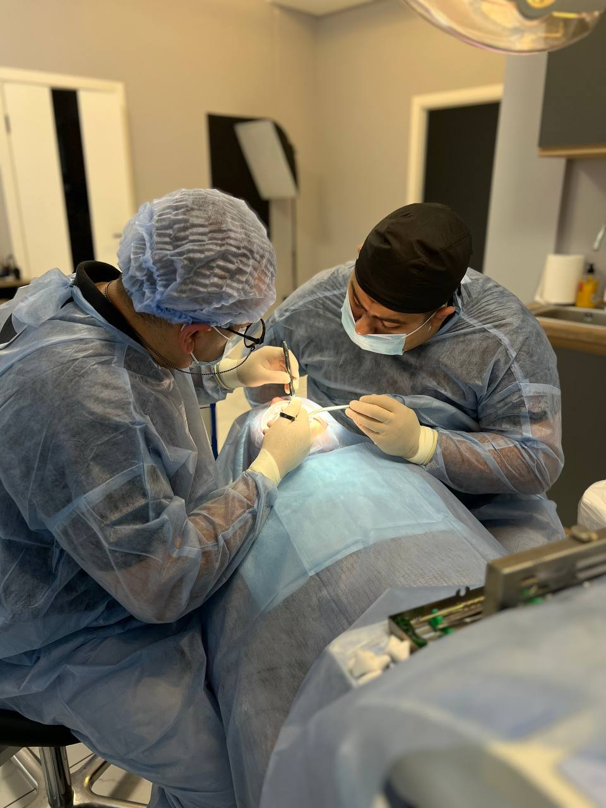

01 — Наша історія
Від Стоматології Родини Придатко до сучасного Sladent — понад 15 років турботи про ваші усмішки.
У серці Тернополя, більше п'ятнадцяти років тому, зародилася Стоматологія Родини Придатко — не просто клініка, а справжнє сімейне покликання, засноване на глибокій повазі до мистецтва стоматології та непохитній відданості пацієнтам.
Ім'я Придатко стало синонімом довіри, професіоналізму та турботи в нашому місті. Покоління за поколінням, родини приходили до нас, знаючи, що отримають не лише високоякісне лікування, але й щиру турботу, співчуття і розуміння.
"Кожна усмішка, яку ми лікуємо, — це не просто зуби. Це впевненість, комфорт і якість життя. Це наша відповідальність і наша гордість."— Філософія Родини Придатко
З часом, стоматологія розвивалась. Ми інвестували в найсучасніші технології — 3D-сканування, цифрову імплантологію, комп'ютерне моделювання усмішок. Ми навчалися у провідних світових центрів. Ми розширили команду найкращими спеціалістами України.
Настав час для нового імені, яке відображало б нашу еволюцію, зберігаючи при цьому душу нашої сім'ї.
Sladent — це наше сучасне втілення. Це яскраве, динамічне ім'я для нової ери стоматологічної досконалості. Але під цим сучасним фасадом б'ється те саме серце — Стоматологія Родини Придатко.

Наша сучасна клініка — де традиційні цінності зустрічаються з інноваційними технологіями
Ці принципи керують кожним рішенням, яке ми приймаємо
Ми ставимося до кожного пацієнта як до члена нашої родини. Ваш комфорт, ваші потреби, ваші побоювання — все це важливо для нас так само, як і для наших власних близьких.
Понад 15 років досвіду, безперервне навчання, участь у міжнародних конференціях і впровадження найсучасніших світових практик. Наші стандарти — найвищі.
Ми інвестуємо в майбутнє: 3D-діагностика, цифрове планування лікування, біосумісні матеріали преміум-класу. Технології, які роблять лікування точнішим, швидшим і комфортнішим.
Ми знаємо, що візит до стоматолога може викликати хвилювання. Тому ми створили атмосферу, де ви відчуваєте себе безпечно, де вас слухають, поважають і підтримують на кожному кроці.
Немає двох однакових усмішок. Немає двох однакових історій. Ми розробляємо персоналізовані плани лікування, які відповідають саме вашим цілям, бюджету та способу життя.
Ніяких прихованих витрат. Ніяких сюрпризів. Ми пояснюємо кожен етап лікування, кожну процедуру, кожну ціну. Ваша довіра для нас безцінна.
Понад 15 років бездоганної репутації. Більше 10,000 успішно відновлених усмішок.
Кожен з наших лікарів — сертифікований спеціаліст з міжнародною кваліфікацією та багаторічним досвідом.
Від профілактичної гігієни до складних імплантацій — все в одному місці, з однією командою, яка знає вашу історію.
Європейські протоколи стерилізації, одноразові матеріали, сучасні системи очищення повітря. Ваша безпека — наш пріоритет №1.
Центр Тернополя, зручний під'їзд, безкоштовне паркування. Легко дістатися з будь-якої частини міста.
Розуміємо ваш насичений графік. Працюємо і в вечірні години, і по суботах. Завжди знайдемо зручний для вас час.
Відповіді на найпоширеніші питання про нашу клініку та послуги
Так! Ми завжди раді новим пацієнтам. Записатися на прийом можна через сайт, за телефоном +380 (97) 935 1535 або особисто в клініці. Перша консультація включає повний огляд та діагностику.
Ми приймаємо готівку, банківські картки (Visa, Mastercard), та безготівковий розрахунок для максимальної зручності наших пацієнтів.
Тривалість прийому залежить від виду лікування. Консультація займає 30-45 хвилин, професійна чистка — близько години, складні процедури (імплантація, протезування) можуть тривати 1.5-3 години.
Так, біля клініки є безкоштовна парковка для наших пацієнтів. Також зручний під'їзд громадським транспортом — ми в центрі міста на просп. Злуки 8.
Звичайно! У нас є спеціаліст з дитячої стоматології. Ми працюємо з дітьми від 3 років і створюємо комфортну, дружню атмосферу, щоб візит до стоматолога був приємним досвідом для малечі.
Ми надаємо гарантію на всі види робіт: пломби — 1 рік, коронки та мости — 2 роки, імпланти — до 10 років (залежно від системи). Детальні умови гарантії обговорюються індивідуально.
Візьміть документ, що посвідчує особу, та медичну картку (якщо є). Якщо маєте результати попередніх обстежень, рентгенівські знімки чи висновки інших лікарів — принесіть їх також.
Досвідчіть різницю, коли сімейна турбота зустрічається з професійною досконалістю